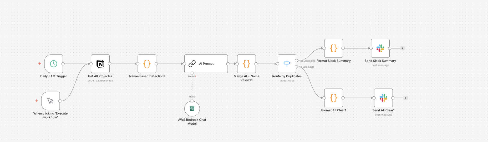

AI Automation Workflow
n8n-powered agents handling the heavy lifting

Key AI Agents
PM Auto-Pilot
Weekly Report Summaries
Duplication Agent
Duplicate Detection & Management
Deep Analyzer Agent
Advanced Analysis & Insights
PM Agent Architecture